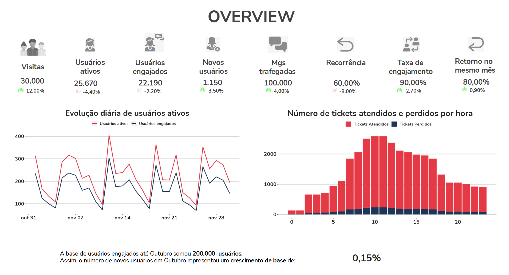
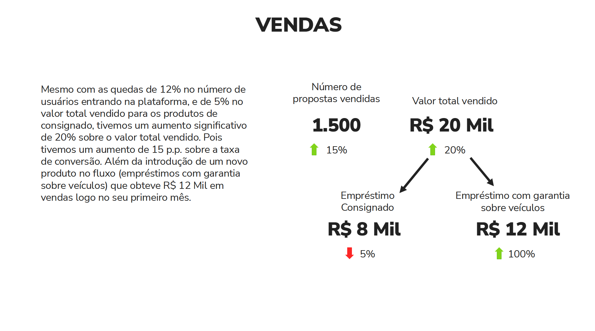
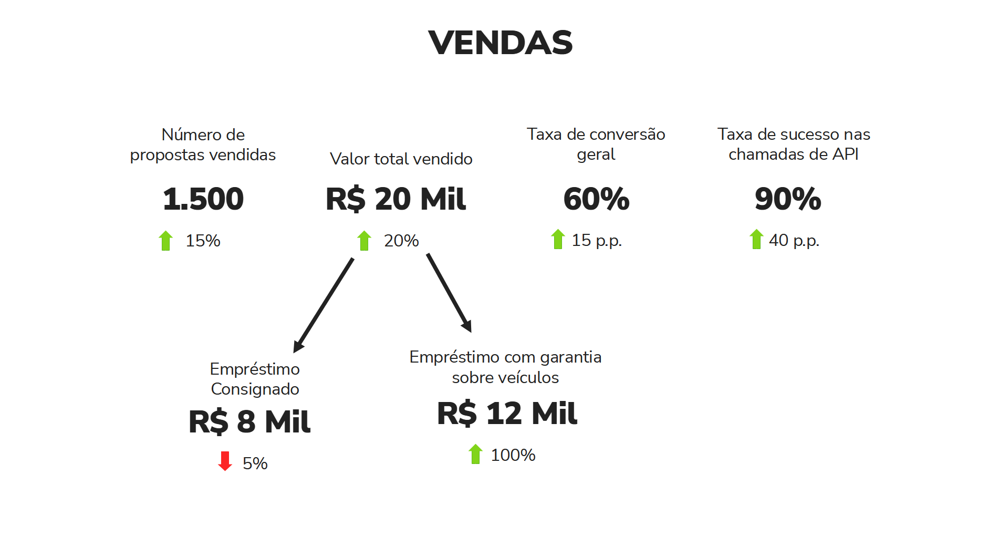
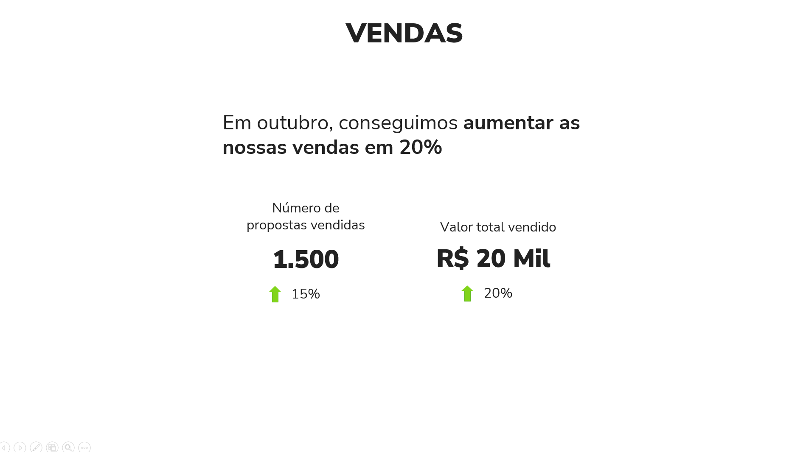
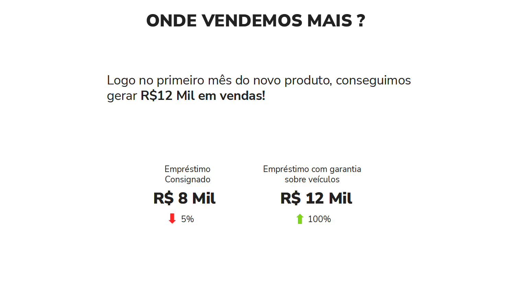
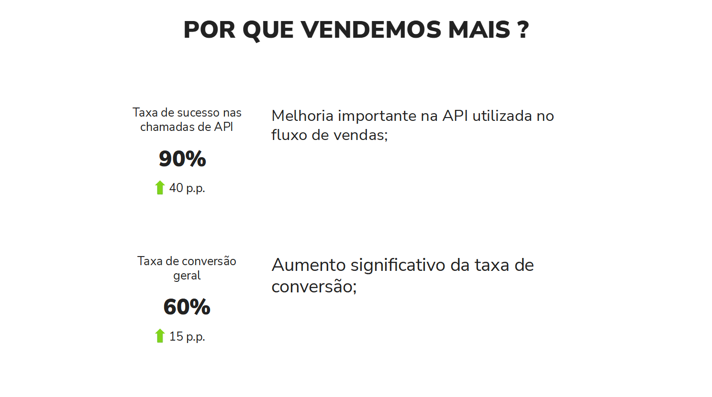

1 Introdução
Este artigo discute como eu melhorei o meu processo de Data Storytelling dentro das minhas apresentações e relatórios entregues ao Banco BMG e ao Banco Pan (os quais são dois dos maiores bancos comerciais do mercado brasileiro). Busco compartilhar o que aprendi nesse processo, e dou algumas dicas que possivelmente vão ajudá-lo a construir relatórios de dados mais intuitivos, cativantes, claros e efetivos.
Em resumo, vamos discutir neste artigo as seguintes dicas:
- Data Storytelling é sobre contar histórias através de dados;
- Histórias tem estrutura, use essas estruturas ao seu favor;
- Evite dividir muito a atenção com textos longos em seus slides;
- Trace relações entre os seus dados;
- Construa sua história em torno de uma mensagem principal;
- Entregue sua história aos poucos;
A maior parte desses conhecimentos foram construídos através de intensa pesquisa, reflexão e planejamento sobre as minhas apresentações, e, posteriormente, adquirindo feedbacks, e realizando pequenos ajustes aqui e ali.
Como você pode esperar de todo grande trabalho como este, ele também envolveu outras pessoas. Durante esse processo, eu recebi ajuda e feedbacks de meus colegas de trabalho, Andressa de Souza Freitas e Guilherme Gomes. Eu também tive uma grande ajuda da UX Designer Alê Fernandes. Vários dos conhecimentos apresentados aqui, eu aprendi na prática com a Alê. Esses conhecimentos revolucionaram a maneira como eu construo minhas apresentações, e, por isso, eu sou imensamente grato a ela ❤️.
Todos os dados, gráficos e imagens mostrados neste artigo são meramente ilustrativos. Todos os números apresentados foram gerados de forma aleatória por um computador! Portanto, eles não representam os dados reais de TakeBlip, do Banco BMG, ou do Banco Pan de nenhuma forma ou dimensão!
2 Resumo da estrutura deste artigo
Na Seção 3, eu forneço contexto sobre esses relatórios que eu apresentava para o Banco BMG e Banco Pan, qual era o formato desses relatórios e quais eram os seus principais problemas e limitações.
Mas a partir da Seção 4, nós começamos a discutir sobre como melhorei esses relatórios. Você vai perceber que boa parte dessas melhorias estão concentradas em dois pontos:
- construir uma apresentação que seja simples e clara;
- construir uma apresentação que tenha uma boa estrutura, isto é, uma estrutura que te ajude a contar uma história através de seus dados;
A Seção 4.1 fornece duas dicas que te ajudam a trazer simplicidade e clareza para sua apresentação, além de discutir o porquê de textos longos em slides serem tão perversos para a atenção de seus espectadores.
Na Seção 4.2 discuto algumas dicas sobre como formar o conteúdo da apresentação, mais especificamente, um conteúdo que te ajude a construir uma história em sua apresentação.
Já na Seção 5, nós pegamos as dicas que discutimos até então no artigo, e tentamos aplicar elas sobre o slide mostrado em Figura 3, com o objetivo de demonstrar como essas dicas podem melhorar sua apresentação.
Por último, na Seção 6, nós discutimos bastante sobre estrutura. Mais especificamente, eu discuto dois exemplos de estruturas que podem servir como um guia, ao fornecer uma base simples que você pode utilizar para construir a sua história.
Enfim, vamos prosseguir…
3 Como era esse relatório antes ?
Na época, estávamos construindo um relatório mensal contendo vários indicadores e gráficos que mostravam o estado atual e a evolução recente dos serviços e produtos do Banco BMG e Banco Pan ofertados dentro do canal do WhatsApp.
Contudo, o formato dessa apresentação era problemático. Nós trazíamos uma quantidade monumental de informações para o banco. A apresentação usualmente trazia em torno de 40 slides diferentes, com aproximadamente 36 gráficos e 70 indicadores diferentes. Para mais, nós tentávamos apresentar todo esse volume de informações em uma reunião de apenas 1 hora.
O resultado final disso tudo era uma apresentação que trazia um volume monumental de informações, porém, que também trazia um volume muito pequeno de insights e novas ideias de negócio para os gestores.
Em Figura 1 temos uma representação de um dos vários slides dessa apresentação1. Imagine que essa apresentação trazia em torno de 40 slides semelhantes a esse:

Perceba que esse slide se parece mais com uma página de um dashboard, do que de um relatório apresentando as últimas tendências do mercado ou do negócio do banco.
Isso é muito importante! Se a sua apresentação traz vários indicadores diferentes espalhados pela página, sem contextualizá-los, sem relacioná-los uns com os outros, sem trazer o que eles significam em conjunto, essa apresentação vai muito provavelmente se parecer com os dashboards que você já produz para o seu cliente.
Tendo isso em mente, qual é o incentivo/motivo/razão que o seu cliente tem para assistir à sua apresentação? Em outras palavras, se a sua apresentação mostra os mesmos gráficos/indicadores que os seus dashboards apresentam, o seu cliente não tem incentivo/motivo nenhum para assistir à sua apresentação. Pois não há nada na sua apresentação que seja novo, ou nenhuma informação da qual o seu cliente não tenha já acesso diretamente.
4 Como podemos melhorar ?
Agora que você possui uma noção do tamanho do problema que as versões anteriores desses relatórios representavam, nas próximas seções deste artigo, vou discutir algumas dicas essenciais que demonstram como nós podemos melhorar o modelo de apresentação mostrado em Figura 1.
No meu entendimento, boa parte do sucesso em data storytelling pode ser resumido em duas ações, ou dois objetivos principais:
- Evitar itens que dispersam a atenção dos nossos espectadores;
- Construir uma história cativante para a nossa apresentação;
O primeiro item acima está mais relacionado à clareza e simplicidade da apresentação, enquanto o segundo item está mais relacionado ao conteúdo e estrutura da apresentação.
Vamos começar pelo primeiro item…
4.1 Uma guerra constante pela atenção
Quando estamos apresentando algo, estamos constantemente batalhando pela atenção dos nossos espectadores. Essa é uma batalha difícil, não apenas porque nós podemos (sem querer) atrair a atenção para os lugares errados, mas também porque existem muitas fontes de distração no mundo moderno (e.g. celulares, emails, etc.)!
Um bom data storytelling depende de você contar uma história cativante, que consiga capturar a atenção de seus espectadores. Por isso, as próximas seções vão focar bastante em dicas que contribuam para essa captura, ou que te ajudam a não dissipar, reduzir ou atrapalhar a atenção desses espectadores.
4.1.1 Por que evitar textos longos em seus slides?
Tente ser parsimonioso nos seus slides! Isto é, tente incluir o mínimo possível de informação dentro dele. Se você precisa repassar várias informações em um slide, tente incorporar o máximo possível desse conteúdo em sua fala, e o mínino possível dele em forma escrita neste slide. Em geral, evite ao máximo incluir textos muito longos em seus slides.
É estranho pensar nisso, mas geralmente, os gestores vão participar e assistir à sua apresentação porque eles estão interessados no que você tem a dizer sobre o negócio deles. Portanto, os seus slides são apenas um material de suporte, eles devem ser secundários, um coadjuvante de sua apresentação. Pois a peça principal da apresentação deve ser sempre a sua fala e a história que você quer contar através dela.
Veja o slide em Figura 2 como exemplo. O problema principal desse slide, é que ele divide muito a atenção de seu espectador.

Ao apresentar um slide, os seus espectadores tem que prestar atenção na sua fala. Isto é, no que você está comunicando verbalmente durante a apresentação. E ao mesmo tempo, eles também precisam prestar atenção no conteúdo do slide. Contudo, esse longo parágrafo no canto esquerdo do slide mostrado em Figura 2 é problemático. Pois ele chama atenção demais!
Esse elemento desperta tanto a nossa curiosidade, que ao ver esse slide, você (leitor deste artigo) provavelmente tentou ler esse texto longo antes mesmo de ler o que estou descrevendo agora neste parágrafo. O mesmo vai acontecer com os espectadores de sua apresentação. Ou seja, os seus espectadores vão imediatamente tentar ler esse parágrafo longo.
Contudo, ler e interpretar um texto longo, exige certo esforço e muita atenção. Como resultado, enquanto os seus espectadores leêm esse texto, eles não vão conseguir prestar atenção em outros elementos de sua apresentação. Por exemplo, na sua fala.
Isso pode ser crucial, pois talvez você traga uma informação a mais, ou uma conexão extremamente importante na sua fala, e eles podem acabar perdendo isso enquanto estão tentando ler esse texto. Portanto, evite ao máximo incluir textos muito longos em seus slides.
4.1.2 Entregue sua história aos poucos
O cérebro humano consegue processar uma quantidade limitada de informações de uma vez só. Como resultado, se você tentar explicar várias informações para os seus espectadores, em um único slide, eles vão acabar atingindo esse limite 🤯, e simplesmente não vão conseguir raciocinar, compreender ou assimilar o que você está explicando.
Portanto, entregue a sua história aos poucos. Evite condensar várias informações em um único slide! Divida o conteúdo em partes, e explique uma parte de cada vez!
Isso ajuda a tornar o conteúdo mais simples, e, como resultado, isso ajuda os seus espectadores a entenderem melhor sobre o que você está falando.
Pense um pouco sobre isso. Quando você busca aprender sobre um assunto complexo (e.g. regressão linear), você provavelmente divide o conteúdo em várias partes pequenas, e, vai aprendendo uma parte de cada vez. Não é assim que você faz? Então traga essa experiência também para as suas apresentações.
4.2 Discutindo histórias e conteúdo
Agora que vimos duas regras básicas sobre a atenção de seus espectadores (i.e. evite textos longos e entregue sua história aos poucos), vamos discutir algumas dicas sobre o conteúdo de sua apresentação, e, sobre como construir histórias com dados.
4.2.1 Data Storytelling não é sobre escolher “o melhor gráfico”
Alguns poucos analistas entendem “data storytelling” como um problema de visualização, ou, como a ciência de “escolher os melhores gráficos” para sua apresentação, ou como projetar gráficos inovadores, bonitos e complexos.
Contudo, data storytelling é sobre contar histórias com dados. Não sobre como construir visualizações. Escolher a visualização certa para apresentar os seus dados, torná-la melhor, mais bonita e mais limpa, é apenas uma parte do processo. Uma parte muito importante, pois isso vai te ajudar a contar sua história de uma maneira mais clara e eficaz, e, com isso, atingir um público maior.
4.2.2 Trace relações entre os indicadores
Agora, vamos analisar o slide mostrado em Figura 3. Perceba que esse slide, novamente, lembra muito uma página de um dashboard. O slide não parece tão cativante à primeira vista, pois ele só mostra os indicadores, ele não constrói uma relação, ou uma história entre eles.

Se prestarmos atenção nesses indicadores, podemos identificar alguns efeitos que estão acontecendo ao longo deles. E se refletirmos um pouco mais sobre esses efeitos, vamos perceber que esses efeitos são relacionáveis! E que em conjunto, eles podem contar uma história.
Por exemplo, perceba que há um aumento significativo nas vendas. Tanto no número de propostas vendidas quanto no valor total em si que essas propostas geraram. Porém, perceba que esse crescimento nas vendas não ocorreu no produto “Empréstimo Consignado”, e sim, no produto “Empréstimo com garantia de veículos”. Ou seja, o produto “Empréstimo Consignado” teve uma queda de vendas nesse mês, porém, o produto “Empréstimo com garantia de veículos” obteve um super resultado que conseguiu cobrir e muito essa queda, e no fim, conseguiu aumentar as vendas como um todo do banco.
Além disso, outros efeitos que podemos perceber são os aumentos na taxa de conversão e na taxa de sucesso de API. Esses também são fatores que contribuíram para o aumento nas vendas. Pois um aumento na taxa de conversão significa que uma parcela maior dos nossos clientes está adquirindo os nossos produtos. Já um aumento na taxa de sucesso na API, significa que temos menos erros nos registros das vendas na plataforma, e isso é obviamente positivo, pois nós temos uma perda de vendas menor por causa de travamentos e erros nesse sistema de registro.
Perceba que todas essas relações nos ajudam a construir uma história sobre como as vendas aumentaram nesse mês, e é justamente isso que queremos atingir. Portanto, tente sempre construir relações entre os seus indicadores, de modo a formar uma história sobre um resultado principal.
4.2.3 Construa sua história em torno de uma mensagem principal
Apenas para deixar claro essa ideia, ao identificar os vários efeitos que descrevemos em Seção 4.2.2, sobre o slide mostrado em Figura 3, é interessante nos questionarmos: qual desses vários efeitos é o principal resultado? Em outras palavras, qual desses efeitos é o que mais interessa os gerentes do banco que estão assistindo à sua apresentação?
Certamente o aumento sobre as vendas é o efeito principal. É o efeito que mais interessa os gerentes que estão assistindo à sua apresentação. Portanto, tente construir a sua história em torno desse resultado, ou dessa mensagem principal. Use os outros indicadores para explicar como esse resultado principal aconteceu.
Isso também é muito importante! Todo gerente gosta muito de ouvir a palavra “aumento nas vendas”. Porém, ele também está sempre interessado em saber o “como esse aumento foi gerado?”. Ou seja, ele precisa saber quais foram as ações realizadas que geraram esse impacto positivo.
Pois ao identificar essas ações, esse gerente tem a capacidade de aplicar essas ações em outras partes de seu negócio, e, com certa esperança, ele pode acabar disseminando esse efeito positivo que você descreveu para outras áreas, e, como resultado, ele pode acabar aumentando ainda mais as vendas da empresa.
5 Colocando algumas dicas em prática
Até aqui, nós discutimos as seguintes dicas:
- Evite textos longos em seus slides;
- Trace relações entre os indicadores;
- Construa sua história em torno de uma mensagem principal;
- Entregue sua história aos poucos;
Vamos botar essas dicas em prática, e reformular o slide mostrado em Figura 3. Você lembra das relações que descrevemos em Seção 4.2.2? Lembra que essas relações traçam uma história sobre o aumento de vendas? Vamos aproveitar essa história para aplicarmos as dicas acima.
Primeiro, estabelecemos que nossa história deve sempre ser construída em torno de uma mensagem principal. Portanto, vamos começar a nossa apresentação nos concentrando em um único slide que mostra essa mensagem principal de forma clara.

Agora que sabemos qual é o assunto principal da apresentação, podemos começar a cavar mais fundo, e descrever esse assunto em mais detalhes. Como um próximo passo, podemos responder à pergunta “onde esse aumento de vendas ocorreu?”.
Essa pergunta pode ser bastante relevante para sua apresentação, especialmente se: 1) você está apresentando para vários gerentes de diferentes áreas ao mesmo tempo; 2) ou também, se você estiver apresentando para um gerente mais alto na hierarquia, que supervisiona várias áreas/produtos ao mesmo tempo. Pois nestes casos, esses gerentes vão logicamente se perguntar onde esse aumento de vendas ocorreu. Será que foi no produto x? Ou foi no produto y? Etc.
Enfim, vamos responder essa pergunta em um novo slide. Com esse slide, deixamos claro para os espectadores, que um novo produto do banco (empréstimo com garantia sobre veículos) foi a grande estrela do mês, ao gerar R$ 12 Mil em vendas logo no primeiro mês, superando inclusive o valor de vendas do produto já consolidado (empréstimo consignado).

A próxima pergunta que precisamos responder é “como?”. Como esse super resultado nas vendas foi gerado? Nós discutimos isso na Seção 4.2.3, que após descobrirem um resultado tão importante, os gerentes vão certamente estar interessados em entender como esse resultado foi gerado, para que eles possam difundir esse efeito positivo para outras áreas do negócio.
Lembre-se que temos dois efeitos principais discutidos em Seção 4.2.2 que explicam como essa melhoria nas vendas ocorreu. Vamos listá-los de maneira clara e curta em um novo slide:

Deixe os detalhes mais específicos dos dois efeitos acima (“qual era o problema na API, e como superamos ele?”, “como isso é uma melhoria?”, “o que é uma taxa de conversão? E como isso afeta o processo de venda?”) para a sua fala. Lembre-se, tente evitar ao máximo colocar textos longos em suas apresentações, e tente dar mais detalhes ou responder às perguntas dos seus espectadores através da fala.
Portanto, com esses três slides nós temos uma estrutura e um conteúdo muito mais interessantes para a nossa apresentação, pois estamos contando uma história sobre como vendemos mais em um determinado mês.
Perceba que a estrutura da apresentação (1: mensagem principal, 2: onde? , 3: como?) nos ajuda a criar o conteúdo e essa história de forma coesa. Nas próximas seções deste artigo, vou discutir duas outras estruturas que podem te ajudar a estruturar e a contar sua histórias de maneira coesa.
6 Histórias tem estrutura, use essas estruturas ao seu favor
Nas próximas seções, vou mostrar dois exemplos de estruturas bastante comuns em histórias. Essas estruturas servem como um guia durante a construção de sua história. Elas te ajudam muito a organizar as suas ideias em um formato claro e efetivo.
6.1 O modelo dos quatro C’s
O modelo dos quatro C’s se refere a estas quatro palavras:
Contexto, Conflito, Consequência, Conselho.
Estas quatro palavras, te ajudam a trazer uma estrutura consistente para a sua história. Além disso, essas palavras também te ajudam a mexer um pouco com as emoções de seus espectadores, e, com isso, capturar mais a atenção deles.
Ao seguir esse modelo, sua história vai sempre se dividir em quatro partes: contexto, conflito, consequência e conselho. Precisamente nesta ordem. Esse estrutura gira em torno de um problema, ou um conflito principal que você identificou no negócio de seu cliente.
O interessante dessa estrutura, é que você pode estacar vários problemas em sequência. Como resultado, você tem um bloco de 4 C’s (contexto, conflito, consequência e conselho), seguido de um outro bloco com mais 4 C’s (contexto, conflito, consequência e conselho). Ou também, você pode começar a apresentação por um contexto, e, em seguida, dois blocos de 3 C’s (conflito, consequência e conselho) em sequência.
Enfim, chega de papo, e vamos descrever em mais detalhes cada uma das partes dessa estrutura.
6.1.1 Começe por um contexto geral
Portanto, ao seguir esse modelo, a sua história vai sempre se iniciar por um contexto geral. Algo apenas para contextualizar o espectador sobre qual é o estado atual do negócio.
Lembre-se que, o modelo dos 4 C’s é construído em torno de um conflito, ou de um problema central. Tendo isso em mente, se, por exemplo, o conflito que você for discutir na sua história, for um problema que afeta o serviço de venda de maquininhas de cartão, é importante que você foque nessa parte do contexto, em dar um overview sobre o produto “maquininhas de cartão”.
Em outras palavras, evite trazer contextos nesta parte que não estão relacionados ao problema/conflito que você vai apresentar na seção seguinte. Pois esse conflito é a parte central de sua história.
6.1.2 Apresente um conflito/problema/desafio a ser superado
Em seguida, você deve apresentar um conflito. Isto é, um problema, um desafio ou uma barreira que você tenha identificado no produto/serviço que você está analisando. É aqui que vamos mexer um pouco com a emoção do espectador, e usar isso ao nosso favor para capturar a sua atenção.
Vamos refletir um pouco sobre isso. Ao colocarmos palavras como “problema”, “cuidado”, “desafio”, “alerta”, especialmente em letras garrafais, além de incluir emojis que transmitem esse intuito, como ⚠️ e ⛔. Isso rapidamente chama a atenção de qualquer pessoa, pois te dá uma sensação de perigo, e você entra em um estado de alerta.
Se você refletir mais um pouco sobre isso, você provavelmente vai perceber que você tem esse mesmo instinto quando você está assistindo a um filme, ou a uma série, e o herói dessa história de repente entra em uma situação de perigo. Você rapidamente presta mais atenção no que está acontecendo, pois você quer ver como o herói vai sair dessa enrascada, ou você está torcendo muito para que ele sobreviva e supere esse problema.
Ao apresentarmos um problema sobre o produto/serviço que você está analisando, estamos querendo causar esse mesmo efeito em nossos espectadores. Ao dizermos que temos um desafio/problema que está afetando as vendas da empresa, os gerentes rapidamente começam a prestar mais atenção no que você está dizendo, pois eles querem saber como eles podem sair dessa enrascada!
6.1.3 Esconder os problemas é uma péssima ideia
Isso é muito importante! Alguns analistas tem medo ou receio de jogar luz sobre os problemas existentes, e, por isso, acabam escodendo eles ou omitindo de suas apresentações. Porém, você não está entregando valor nenhum para o seu cliente dessa forma! Você não está ajudando o seu cliente a resolver os problemas e a crescer o negócio dele!
E se os problemas não são solucionados, se eles continuam existindo, eles vão crescer, e crescer, até que eles explodirem, gerando assim um caos generalizado. Em vista disso, quanto mais cedo você identificar esse problema, avisar os gerentes sobre ele, e apresentar possíveis soluções para ele, melhor para os gerentes, que já saem com um plano de ação para resolver esse problema, e é melhor para você também, pois estamos entregando valor e soluções para o cliente.
Portanto, uma boa apresentação, ou um bom relatório de dados, é aquele que entrega valor para o seu cliente! Ao mostrar novas oportunidades de negócio (e.g. atingir uma nova parcela do público com um produto), e também, apresentar soluções para problemas atuais que estão limitando ou impedindo o crescimento do negócio.
Porém, uma apresentação que apenas comenta pontos positivos, que fala que está tudo bem… não traz valor nenhum para os gerentes. Os gerentes não te contrataram para falar que está tudo bem. Eles te contrataram para que você ajude eles a descobrir e solucionar problemas no negócio deles, através da análise de dados.
6.1.4 Apresente as consequências do conflito/problema/desafio que você identificou
Portanto, após apresentar um conflito/problema/desafio que está afetando o negócio para o seu espectador, é importante que você apresente logo em seguida a consequência desse problema. Isso ajuda os gerentes a terem uma dimensão do tamanho que esse problema representa para o negócio deles.
Tudo bem se você não conseguir mensurar em números o tamanho do impacto que esse conflito gerou no negócio. Tente medir esse impacto da melhor forma que você puder. Um valor aproximado do impacto já pode trazer bastante clareza sobre o tamanho do perigo que esse conflito representa para o negócio de seus espectadores.
Você também pode fornecer um range, ou um intervalo possível do impacto se você puder (e.g. o impacto estimado está entre R$ 20 mil e R$ 340 mil). Essa também é uma forma válida de expor o tamanho do problema.
Caso for realmente impossível de mensurar esse impacto em números, então, explique nesta parte, quais são os pontos do processo de venda do produto/serviço que são afetados por esse problema. Em outras palavras, apresente quais são os lugares do negócio que estão sendo, em teoria, afetados por esse conflito.
6.1.5 Aconselhe o seu cliente, apresente possíveis soluções para o problema
Ok, apresentamos um problema, ou um conflito para os nossos espectadores. Também discutimos os impactos desse conflito sobre o negócio de nosso cliente. Agora, precisamos apresentar possíveis soluções para esse problema.
Portanto, entenda o problema/conflito que você está apresentando, e tente listar quais seriam as principais soluções para esse problema, e inclua essas soluções nesta parte de sua apresentação. Vale a pena explicar e discutir esse problema com outros colegas de trabalho também, pois eles também podem sugerir soluções interessantes que estavam fora de seu radar.
É interessante também incluir uma relação dos trade-offs de cada solução, principalmente em questão de complexidade e esforço de cada solução. Gerentes estão constantemente interessados nessa relação, e querem sempre escolher a solução que seja mais simples e mais rápida de ser implementada.
6.2 Evolução do personagem como uma outra alternativa
A evolução do personagem (ou a “jornada do herói”) é uma estrutura de história bem popular. Você começa por um personagem, ou, um herói para a história, que no nosso caso aqui, pode ser o negócio do nosso cliente, ou um produto específico dele.
Nossa missão é mostrar como esse personagem/herói evoluiu nos últimos meses. Por isso, essa estrutura de evolução é bastante apropriada para relatórios no final do ano. Pois esses relatórios são interessantes para mostrarmos a evolução do negócio (ou a evolução do personagem) no último ano.
6.2.1 O início e o fim da jornada
Se você preferir, você pode começar a sua apresentação apresentando como o seu personagem estava no início da jornada, e, terminar essa apresentação mostrando como esse personagem terminou essa jornada.
Essa é uma opção, porém, eu prefiro começar a apresentação mostrando o início e o fim ao mesmo tempo. Desse modo, os espectadores já começam a apresentação tendo uma noção do quanto o negócio evoluiu durante o ano. Portanto, eu começo apresentando como o personagem (ou o negócio/produto) começou o ano, e, logo em seguida, como ele terminou o ano.
6.2.2 Apresentando os desafios e percalços
Em todo negócio/produto, qualquer que ele seja, nós sempre enfrentamos grandes desafios que podem ameaçar o sucesso, ou, limitar a evolução deste negócio/produto.
Portanto, ao longo de qualquer jornada, nós sempre enfrentamos desafios e percalços, e aplicamos ações para tentar superar esses desafios. Ao superar esses desafios, nós podemos com certa esperança gerar a evolução e melhoria desse negócio/produto. Isto é, chegar ao final dessa jornada com um negócio/produto melhor, mais robusto e mais rentável.
Tudo isso significa que o “como percorremos o meio da jornada” pode ser muito mais importante/interessante que o início ou o final dessa jornada. Sendo assim, reserve uma parte de sua apresentação para apresentar os principais desafios que enfrentamos durante essa travessia, e como superamos eles.
6.2.3 Se possível, aproveite para valorizar o trabalho de sua equipe
Nesse ponto específico da apresentação, você geralmente tem uma oportunidade muito interessante! Pois você pode, entregar valor ao seu cliente, e, ao mesmo tempo, também valorizar o trabalho de sua equipe, especialmente se foi essa a equipe que descobriu os desafios, e, aplicou as ações que superaram esses desafios que você está descrevendo.
Isso é uma oportunidade de ouro! Portanto, se você tiver essa oportunidade em suas mãos, aproveite ela! Lembre-se que você não trabalha sozinho. Você quase sempre está trabalhando dentro de uma equipe de pessoas, e é sempre importante saber como valorizar o trabalho de seus colegas.
Contudo, essa oportunidade nem sempre vai aparecer para você. Talvez os desafios que você está apresentando, foram superados de outra forma, por uma outra equipe que você não conhece, ou que não possui conexão direta.
6.2.4 Reforce os resultados alcançados
Também é útil terminar a sua apresentação, mostrando um resumo dos resultados alcançados ao longo do ano. Isto pode ser um bulletpoint simples, resumindo os principais resultados. Isso ajuda a refrescar a memória de seus espectadores, mostrando a eles não apenas sobre como terminamos a jornada do ano passado, mas também, sobre como nós começamos a jornada do próximo ano 😉.
6.2.5 Um resumo da estrutura
Portanto, nas seções anteriores discutimos uma ideia de estrutura que seria similar à uma “evolução do personagem”. No final, temos uma história que segue a seguinte sequência:
- apresente rapidamente como começamos e como terminamos a jornada;
- apresente os principais desafios que enfrentamos durante o ano;
- quais foram as soluções que aplicamos para solucionar os problemas;
- reforce a evolução do personagem, ao mostrar novamente os resultados atingidos com as soluções acima;
Footnotes
Vale relembrar que os números e gráficos apresentados nessa imagem são meramente ilustrativos, e, foram definidos de forma completamente aleatória.↩︎